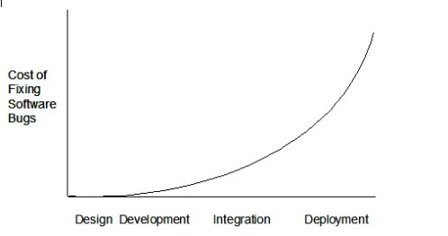
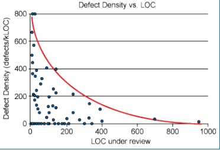

也紀念我們永遠的朋友 李士傑先生（Shih-Chieh Ilya Li）。
Code Review 指引
為什麼需要 Code Review
要瞭解為什麼需要 code review 之前，先透過下面這張圖解釋，隨著軟體開發週期越後面的階段或經歷的時間越長，軟體修復 bug 的成本越高。

▲圖 1 軟體修復成本與時間關係（資料來源：https://buildsecurityin.us-cert.gov/articles/best-practices/security-testing/risk-based-and-functional-security-testing）
為什麼越晚修復，成本會越高呢？這跟技術債的情況相同，債會生利息，而這利息與循環利息和複利一樣可怕。開發越後期大樓越蓋越歪，疊床架屋與貪快累積的技術債將導致程式包袱越大，也越難維護。然而也因為只要是程式就一定會有 bug ，而越晚修復 bug 的成本越高，因此在各個開發團隊中，希望有效降低軟體維護成本最佳的方式，就是下列兩種：
- 提早發現 bug 並進行修復，讓 X 軸的值小一點，自然 Y 軸所代表的成本就低一些。
- 讓程式儘可能地好維護一些，以減緩成本上升的曲線斜率。一旦曲線平緩一些，Y 軸所代表的成本自然也會低一點。
而進行 code review 則是有效滿足上面兩個目的：提早發現 bug 且修復，並讓程式好維護一些。
什麼是 Code Review
程式一定有 bug 主要是因為開發人員很容易陷入自己的盲點，常見的盲點有兩種：
- 程式是照你寫的跑，不是照你想的跑。
- 程式照你想的跑，但你想的是錯的。
要突破上述的盲點，最簡單的方式就是找別人來 review 你開發中或開發完的程式，跟你一起確認程式是否寫的跟你想的一樣，以及確認你想的是對的。
註：當然，review 開發中或開發完的程式所發現 bug 的時間點，就是上圖的 Development 階段，如果希望能在 Design 與 Developer 階段中就發現問題，來讓 bug 根本不會發生，或是在第一時間點就被修復，這就是極限編程 (eXtreme Programming) 中所提倡的搭檔編程 (pair programming)，這在實務上更是挑戰工程師的人性以及管理者的極限，但以 bug 修復成本的角度來看，這的確花費的成本最低。
簡單的說 code review 就是邀請其他人來幫你審查，原始碼上是否存在著不妥之處，例如風格是否與團隊一致、是否有哪邊程式可讀性不佳、有壞味道、不好維護、不好擴充、安全性疑慮、效能不佳、甚至壓根就誤解需求的問題存在。有的時候「三個臭皮匠勝過一個諸葛亮」，臭皮匠有臭皮匠的角度，諸葛亮有諸葛亮的盲點，一定要記住「程式碼是屬於整個團隊的」，不論自己寫的程式再高超、再有效率、再有彈性，如果沒有人可以維護，那就都只是空談。
Code Review 會議的種類
Code review 的方式見仁見智，個人覺得沒有絕對最佳解，只有慢慢 tuning 出最適合團隊的 review 方式，並建立起自己團隊的文化、價值觀與 Code review 的規範和流程。
但可以確定的是，當 code review 的頻率越低，則代表著需要 review 的範圍越大，可能重工的範圍與成本越高，而上線的時間壓力也越緊迫。團隊往往會因為上線時間壓力而導致空頭 review 或略過 review 的動作，大家都知道哪些地方設計不好，卻不進行修改。而 code review 的頻率過高，相對會帶來的 overhead 也會比較多。因此怎麼調整 code review 的頻率與 review 的重點就顯得格外重要。
這邊則針對幾種不同的團隊組成，提供幾種常見的方式供大家參考。
一、團隊中有大量新進工程師，較少的資深工程師
這種時候通常新進工程師只有基本的教育訓練或是由他們自行參考舊的程式與文件，對團隊的開發標準 (coding standard)、開發規範 (code convention)、命名規則、系統架構、系統介接與領域知識不熟悉。他們需要由資深人員帶領，透過實際的例子來對他們進行教育訓練，只是訓練的方式是以 review 新進人員所撰寫的程式碼來進行。
這種情況下 code review 參與人員幾乎是整個開發團隊，好處是透過一次實務的例子，就能讓所有成員用最快的速度了解哪些錯誤不要犯，進而回去修改他們開發中的程式，避免犯同樣的錯誤。壞處則是與會人員一多，花費的時間成本就會相當高，一定要確保 review 會議有效率且有達到效果。
這類型的 code review 頻率建議上限一週一次。當新進工程師開始進入狀況，瞭解團隊文化與開發規範後，就可以減少這類型的 code review 會議，而往其他類型進行。
二、團隊中資深與新進人員比例相當，或是彼此專長領域不相同
這樣的團隊組成，建議可以進行 daily 的 pair review，由資深與新進的工程師進行配對，或是由熟悉不同領域知識的工程師配對，每天花 15~30 分鐘針對今天程式碼異動的部分 (Code Churn)，彼此同步一下。一般一個開發人員每天可以產出新的程式碼（不包含產生器自動產生的部分）行數約莫 200~400 行，因此建議要控制在半小時內 review 完畢，最好也可以把時段固定下來，如同 Scrum 的每日站立會議一樣，儘速且小範圍地針對原始碼提供回饋與建議。而這樣的範圍也是最容易找出 defect 的比例，如下圖所示：

▲圖 2 LOC 與 Defect 發現的關係圖（資料來源：https://smartbear.com/SmartBear/media/pdfs/11_Best_Practices_for_Peer_Code_Review.pdf）
這樣配對的好處是，參與的人員較少，可以輕量化地進行 review 與溝通。在 review 過程中，只要出現程式碼看不懂的情況，基本上可以歸類為：
- 程式碼是對的，可能是新進人員的技術能力不夠或是不熟悉 domain 的伙伴對需求不夠瞭解。這時候可以針對技術或 domain 不懂的部分進行解說，趁這機會備份彼此的技術與領域知識，這是提升團隊能力與彼此備援的一個重要流程，比起單向的一對多專案分享或教育訓練，來得有效率地多。
- 程式碼是有瑕疵的，可能是新進人員違反了開發規範、較難維護擴充或設計出效能較差的演算法，也可能是程式碼的易讀性不夠，讓其他工程師無法輕易瞭解需求與程式碼的設計目的。這時也是協助他們修正與學習的好時機，建立團隊的開發文化，就需要從平時開發的小細節著眼。
不論 review 後的程式碼如何，可以確保的是，這一份程式碼至少有兩個人以上瞭解其意義，也就是擁有共識。並且透過這個機會來提升或備援彼此的領域知識和技術能力，將 code review 的價值最大化。
Code Review 前透過工具的 Preview
在進行 code review 之前，有一些開發規範應該要善用工具來作程式碼分析，以節省 review 過程中所需要花的時間。透過這些工具與定義的標準，可以客觀地審視與協助團隊成員在開發時不會像脫韁野馬、各自為政。下面列出幾個開發規範相關的工具（以 .NET 為例）：
- 統一命名標準－詞彙表 (Glossary)：可透過 GoogleDoc、Wiki、Excel 或其他知識管理平台來建立，屬於自己團隊領域知識的相關詞彙，以及開發上的命名習慣。命名，是軟體開發最基本，也是最重要的一件事。
- 程式碼風格分析：可透過 StyleCop 來自訂屬於團隊的風格規則範本，讓開發團隊可以隨時檢查程式碼是否有違反風格規則。團隊中程式碼風格的一致性是易讀性與可維護性的基礎之一，風格沒有絕對的對錯，但當規範訂出來之後團隊就應該遵守，規範可以經過團隊同意後進行調整，但程式碼風格的檢查應交給工具來做，才會快速且客觀。如果 code review 還要花時間調整 style ，那就無法做到輕量化敏捷的 review ，時間一旦拉長，與會人員就容易失焦與失去耐心。
- 程式碼相似度分析：可透過 Simian 或 VS2012 Premium 以上的版本來進行重複程式碼分析。重複的程式碼一直都是壞味道的基本來源，如何快速的掃描出專案中有哪些程式碼是重複的，可以幫助團隊快速地找到程式碼壞味道，檢查是否違反了單一職責原則 (SRP) 中的同一份職責散落在不同物件中。團隊也可以設定出自己的指標門檻，例如超過20行重複，才需要送出警告。
- 程式碼複雜度分析：可透過 SourceMonitor 或 VS2010 Premium 以上的版本中的計算程式碼度量功能來分析循環複雜度。所謂的循環複雜度，簡單的說就是程式碼的分歧路徑，可以想像如果一個方法中程式碼可執行的路徑越多，代表人腦要理解程式碼意義的成本就越高，也代表程式碼可能越難維護。因此複雜度太高也是壞味道之一，直接透過工具分析出複雜度，可以讓開發人員在 code review 之前，就將這些可能不易懂的方法內容修正，以節省 review 的時間，也就是開發人員在開發時就透過工具來幫自己的程式碼做健康檢查，先行用工具 review 的意思。這邊建議分析的報告可以顯示前 15 個最複雜的方法來協助團隊瞭解，目前專案中最複雜的方法是哪一些。而團隊複雜度指標門檻建議可以限定複雜度在 15 以下，也就是複雜度超過 15 時，開發人員應說明原因，確認無法或不需要重構，方可通過審查。
- 綜合品質分析：可透過 FxCop 或 Visual Studio 的靜態程式碼分析來進行分析，團隊可依據團隊規範以及專案的性質，建立不同規則集。FxCop 與 Visual Studio 的靜態程式碼分析其實核心是一樣的，如果開發團隊針對基本的安全性分析找不到免費或可信任的工具，建議也可以直接使用 FxCop 中的安全性規則，在 OWASP 上也有推薦使用 FxCop 來進行基本的分析。
上述的工具，除了在開發時期使用，也都可以部署在持續整合伺服器（如 Jenkins、TFS）上每次建置時運作。不管是 daily build 或是 checkin build ，每次程式碼有異動時，團隊就可以在第一時間知道程式碼的品質趨勢是上升或下降。團隊應建立品質文化，當 build failed 或品質開始出現缺陷時，必須用最短的時間修正，否則在破窗效應下，技術債就可能累積越來越多，最後形成焦油坑。
相對大於絕對，趨勢大於數字
在使用程式碼分析工具時，要避免成為數據的奴隸，這些指標報告就如同健康檢查報告，紅字不代表一定有問題，但一直紅字就代表需要關注。而許多團隊可能已經有既有的程式碼或系統 (legacy code)，這時建議大家應瞭解品質指標數據不是絕對的，但一定要守住相對的底限。
也就是不管原本的程式碼品質有多差，在每一次程式碼的異動後，經過每一位開發人員手中，程式碼品質只能更好，不能更糟。因此，這些指標的趨勢要比數字來得重要得多。只要每一次的異動，都能讓品質更上一層樓，哪怕只是一個風格警告的修正，都能幫助產品更好。只要維持住這樣的演進過程，就不用擔心被技術債壓垮，缺陷的趨勢是收斂的，團隊就能更有信心。
Code Review 的注意事項
如前面所說，方式沒有絕對的好壞或對錯，這邊列出一個基本的流程供讀者參考。
Code review 之前的動作
- 確保程式碼已經通過靜態程式碼分析並符合指標規範，若存在違反規範的部分，應針對該指標進行說明。
- 應先讓與會人員清楚這次要 review 的範圍、需求、流程，若有開發人員已經存在的疑問，也應提前告知與會人員。
- 確保程式可以建置或正確執行。
Code review 開始
- 先檢查工作清單上的 TODO 是否都被清除了，若沒有，應針對 TODO 進行說明。
- 透過 scenario 或測試案例來說明需求，針對異動的部分進行說明。
- 商業邏輯的說明只需說明 context 的流程，透過程式碼的命名與抽象層級的設計，說明時其實就跟程式碼命名幾乎一模一樣。
- 若有需要修改的部分，建議加上 TODO 相關註解，在 Visual Studio 透過工作清單視窗，就可以避免因紀錄或馬上修改導致 review 時間拉長。
Code review 哪些東西
- 程式碼是否滿足業務與營運需求
- 程式架構與系統設計是否滿足未來擴充性（確定可能會增加的需求）
- 程式碼的易讀性、擴充性與抽象層級一致性
- 程式碼效能問題
- 程式碼安全問題
- Error handling
結論
Code review 很常因為資源、時程、習慣等問題，而被歸類到「我知道這很好，也知道應該要做，但我們無法落實在實務上」的情況。透過上述的簡要說明，整理出幾個重點：
- 建立團隊文化與開發規範。
- 透過工具來快速且客觀分析程式碼壞味道。
- 頻繁且小範圍的進行 review。
- Review 過程除了增進程式碼品質以外，更重要的效益在備援與教育訓練團隊成員間的領域知識與技術能力。
- 提前準備不能省，讓會議效率最佳化。
- 一定要有會議紀錄與待辦事項持續追蹤。
- Review 的心態要正確，不應帶著挑戰或雞蛋裡挑骨頭的態度，目的應是彼此學習和讓產品更加進化。
希望這篇文章可以幫助讀者建立起最適合自己團隊的 code review 流程與規範，消除技術債的糾纏，讓軟體開發的過程能產出逐步進化的產品。
Special


Address：No.128, Sec.2, Academia Rd., Institute of Information Science, Academia Sinica, Nangang District, Taipei City 11529, Taiwan (R.O.C).
Privacy Policy. Terms-of-use